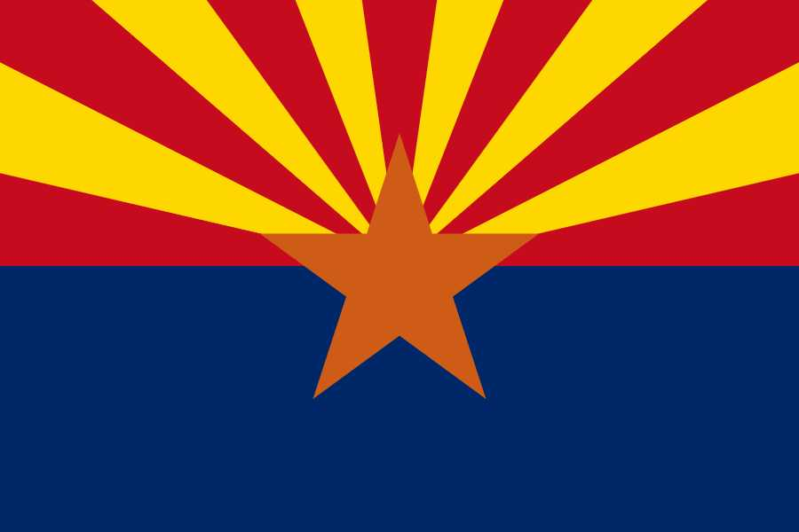

About me
My name is Austin Shiflet. I was born in San Tan Valley, Arizona, but now I live with my wife in South Jordan, Utah. I currently work as a delivery driver for an electrical supply company known as, "Sonepar." I love working on cars and playing sports, my favorites are basketball and volleyball.
Arizona
Arizona is a state in the southwestern region of the United States. It is known for its desert climate, stunning landscapes, and rich Native American history. The Grand Canyon, one of the Seven Natural Wonders of the World, is located in Arizona.